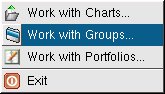
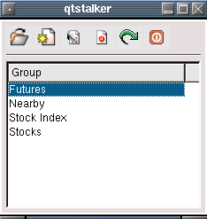

The work with groups dialog allows you to view, create, edit, rename and delete groups. A group is simply a collection of charts defined by you. Here is an example dialog.
This will load and display the selected group. eg Stock Index
Here you can create a new group. Selecting this will bring up a series of dialogs. First you are asked for a name to call your new group. The name must be unique, if not an error message will display.

After selecting a name, a dialog that allows you to enter or delete symbols for the group will appear.

Opens a dialog that allows you to edit the contents of the group. Use the insert and delete buttons to add or remove the group contents.
This brings up a dialog that allows you to enter the new name of the selected group.
Permanently delete the group selected.
Closes the Work with Groups dialog.